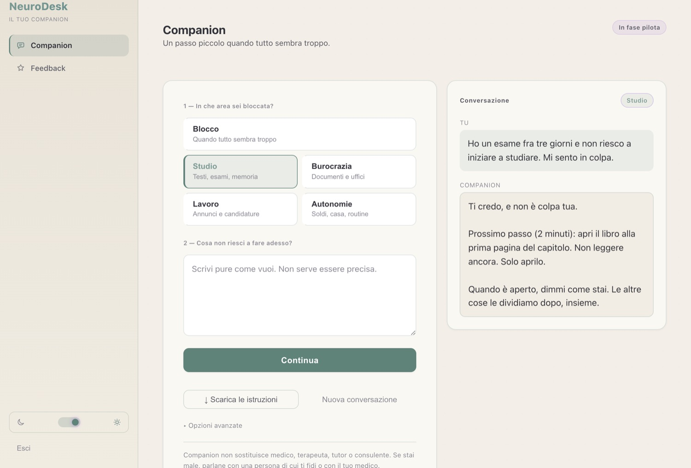
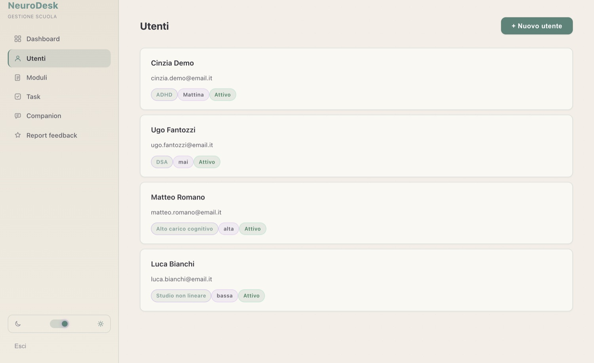

De la surcharge au prochain petit pas
Un outil pratique et bienveillant pour adultes neurodivergents — TDAH, autisme, AuDHD, TOP, troubles DYS.
En trois étapes, du blocage à l'action
Écrivez la tâche qui vous bloque, même si vous n'arrivez pas à bien l'expliquer. NeuroDesk trouve avec vous le premier point sur lequel agir.
Vous dites ce que vous n'arrivez pas à faire maintenant
Écrivez comme ça vient, sans devoir bien l'expliquer. Choisissez le domaine : blocage, études, démarches, travail, autonomie.
Vous recevez un seul pas
Une micro-action de deux minutes, pas un plan entier. Si c'est encore trop, on la divise en un pas plus petit.
Reprenez où vous en étiez à votre retour
NeuroDesk se souvient de ce sur quoi vous travailliez, et vous pouvez télécharger vos étapes pour les garder avec vous.
Choisissez votre parcours
Je veux l'essayer
Vous êtes une personne neurodivergente et vous voulez utiliser NeuroDesk et nous dire ce que vous en pensez ? On vous donne un code pour commencer.
Je suis testeur →Je suis partenaire
Entreprise, école, organisme ou financeur ? Découvrez le projet, voyez le produit, et parlons-en ensemble.
Je suis financeur →Une aide qui rend possible de commencer
Écrivez la tâche qui vous bloque. NeuroDesk répond par un seul pas concret, celui que vous pouvez faire maintenant.
Un pas à la fois
Pas de longues listes à écouler : une seule micro-action de deux minutes, puis la suivante quand vous êtes prêt.
Les tâches qui semblent énormes
Études, démarches, travail, maison : les tâches où commencer est le plus dur deviennent un pas possible.
Sans jugement et sans nom
Vous entrez avec un code et écrivez comme ça vient. Les conversations sont chiffrées sur notre serveur et vous les supprimez quand vous voulez.
Simple pour qui l'utilise, clair pour qui le gère
La personne reçoit une aide concrète. Ceux qui l'accompagnent — école, organisme ou entreprise — voient comment ça s'est passé.

Écrivez, et recevez un pas
Écrivez la tâche que vous n'arrivez pas à commencer. NeuroDesk répond par une seule micro-action concrète, sur un ton qui ne juge pas.

Gérez qui l'utilise
L'école ou l'organisme crée les accès et gère les personnes qui utilisent NeuroDesk, chacune avec son profil.
Prochain pas (5 minutes) : ouvrez le fichier et écrivez seulement les titres des sections. Le contenu viendra après.
Un avantage pour ceux qui travaillent mieux ainsi
Les organisations peuvent offrir NeuroDesk à leur équipe : un soutien quotidien pour les tâches où commencer, organiser ou terminer demande plus d'efforts. L'entreprise gère les accès, elle ne lit pas les conversations.